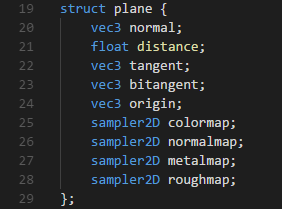
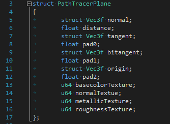
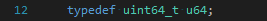
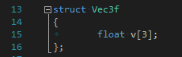
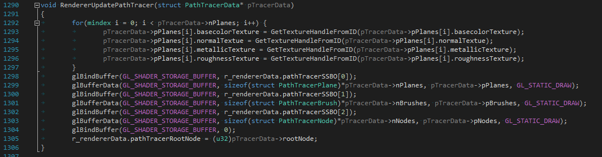
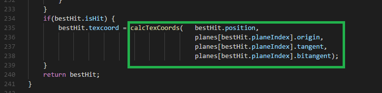
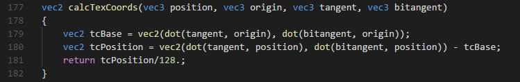
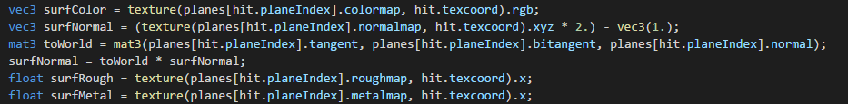

So, since I haven't seen any other writeups covering the subject of adding texturing to an OpenGL ray-tracer/path-tracer (they all seem to stop just short of that step, or go into procedural texture) I figured I might as well blog about the approach I used for the path-traced viewmode in Sunrise (my work-in-progress brush based map editor).
If you're used to working with the traditional real-time graphics pipeline then you're probably used to shaders having a relatively small set of texture inputs passed in as uniform variables that are change on a per-object basis while drawing the scene, which of course works out fine when things are all being draw one triangle at a time and need no information about the other parts of the scene. When path tracing however we need to know about all the triangles (or other primitives, in Sunrise they're convex polyhedrons) so that when a ray intersects an object we will have information about the surface color, roughness, metallness, normals, etc. Luckily this turns out to be quite easy to do, though it requires a OpenGL extension to do it the way I have chosen to implement it, specifically GL_ARB_bindless_texture.
GL_ARB_bindless_texture gives us bindless texturing which allows us to create texture handles and image handles from textures created with glTextureStorage2D() by using the extension functions glGetTextureHandleARB() to create a texture handle (for accessing the texture through a sampler allowing us to make use of texture filtering) and glGetImageHandleARB() to create an image handle (allowing use of imageLoad(), imageStore(), etc.). After creating the handles we need to use glMakeTextureHandleResidentARB() and glMakeImageHandleResidentARB() to make them resident before using them in our shaders. In our case we actually only need texture handles for the textures used in our scene and only need image handles for our framebuffer or any other images we wish to update from our shaders or read from directly without filtering using imageLoad().
The SSBOs used in my path tracer look like this in the compute shader:

where plane is defined as:

and on the C side of things is defined as:

where u64 is:

and Vec3f is:

and is loaded as follows:

when my traceRay() function inside my compute shader returns a hit, with texcoords calculated by calling:

which is defined as:

I simply sample the textures as follows:

If you wished to implement texturing without use of bindless texturing some alternatives you could look at are:
* currently I am in the process of porting Sunrise's backend renderer to Vulkan so I'll likely write another post about this at some point in the future.